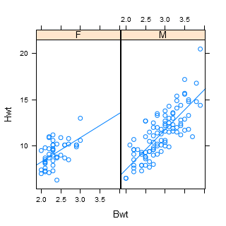

Ordinary paragraph text can be entering using
hwrite.
Aspects of the text such as the font family, face, size and colour can
be altered in line by using tags or styles.
For example the font can be changed to sans-serif
like this,
italic like this, bold like this, coloured
like this, or any combination of these
like this.
Some text variations may not be rendered appropriately as can be
seen in the examples above. Classes can be defined in the
.css file
to deal with this problem.
Incorporating Special Symbols
Using appropriate tags and a list of symbols it is possible to
output mathematical and other symbols. Superscripts and subscripts are
also possible.
Here are some Greek letters: α
β and Γ,
followed by some examples of superscripts and subscripts:
α2 and βn. As examples
of other symbols, here are some arrows:
← and ⇒, some set symbols:
∃ and ∩, and some operators:
∫ and ∏.
More than one approach is
available to produce mathematical symbols.
Greek letters can be produced by using symbol font:
a, b, G, although this may not
work in some browsers without the presence of additional fonts.
Codes can be used instead of \(\LaTeX\)-like names:
←, ∫ and ∏
Quotes can be incorporated by escaping with "\",
so for example we can obtain " and ' in the middle of some text.
Rendering Mathematics
Entering more complex mathematical expressions including
displayed mathematical expressions is difficult.
One approach is to insert
an image produced by other means, for example by \(\LaTeX\) or Word's
equation editor. The following expression was produced by Word's
equation editor then saved as a jpeg.
To enable the rendering of complex mathematical expressions
using \(\LaTeX\) syntax, JavaScript is required, the JavaScript being
run when the file is loaded into the browser. The package
R2HTML uses MathPlayer to do the
rendering. An alternative is MathJax which is used by
org-babel. MathJax is supported by a number of
scientific societies and is sponsored by the American Mathematical Society
and the Society for Industrial and Applied Mathematics:
see .
MathPlayer does not work reliably in all browsers and may require an
add-on to function. MathJax is preferred for these reasons in extending
the capabilities of hwriter in the
hwriterPlus package
Here is an inline expression:\(\int_{-\infty}^{1}f(x)dx\),
followed by two displayed expressions, one of which is numbered and
has also been assigned a label.
The first example also has a box around it, by assigning the value
"border = '1'" to the argument
table.attributes.
Incorporating images is complicated by the inability of
different browsers to display images in different formats.
Firefox will not display .wmf images for example.
The only scalable image format which can be displayed by all the
common browsers (Internet Explorer, Firefox, Safari and Chrome)
appears to be .svg,
scalable vector graphics.
Here is a windows metafile, .wmf image.
Unfortunately this will only display in Internet Explorer (or Microsoft Word),
and there will be no output produced at all if the operating system is not
Microsoft Windows.
The example is the cats data used by Leisch as an Sweave example,
taken from Venables and Ripley (1987).
The data frame contains measurements of heart and body weight
of 144 cats (47 female, 47 male).
A linear regression model of heart weight by sex and gender was
fitted to this data. The graph is a scatter plot of the data including
the regression lines.
Here is the cats data plot in svg format.
This uses an extension to hwriter to produce HTML code which enables
display in up to date versions of all common browsers.
A further format is png (portable network graphics).
This should display in up to date versions of all common browsers.
It is a bitmap format however so not scalable.

One problem with images is that the size of the image displayed
can vary widely from browser to browser. Obtaining the right sized image
for a particular browser may require a lot of trial and error.
Vectors, Matrices and Dataframes
Here is some code producing a character vector
form <- y ~ a + b + c
example <- as.character(form)
L3 <- LETTERS[1:3]
d <- data.frame(cbind(x = 1, y = 1:10),
fac = sample(L3, 10, replace = TRUE))
This is the result of printing the dataframe
x
y
fac
1
1
C
1
2
A
1
3
C
1
4
B
1
5
C
1
6
B
1
7
C
1
8
A
1
9
A
1
10
B
Tables
Here is an example taken from the documentation of
xtable. It shows the output of an
ANOVA table.
Df
Sum Sq
Mean Sq
F value
Pr(> F)
sex
1
75.37
75.37
0.38
0.5417
ethnicty
3
2572.15
857.38
4.27
0.0072
grade
1
36.31
36.31
0.18
0.6717
disadvg
1
59.30
59.30
0.30
0.5882
Residuals
93
18682.87
200.89
Here is an example taken from the documentation of
table. It shows the output of a
two-dimensional table.
Northeast
South
North Central
West
New England
6
0
0
0
Middle Atlantic
3
0
0
0
South Atlantic
0
8
0
0
East South Central
0
4
0
0
West South Central
0
4
0
0
East North Central
0
0
5
0
West North Central
0
0
7
0
Mountain
0
0
0
8
Pacific
0
0
0
5
R Output
To include output from R in a file, the
command capture.output is used to record the output.
Then the output is included in the HTML file by using the command
hwriteOutput, which is not in the package
hwriter.
Here is an example from the glm help.
Note the commas separating the parts of the output to be captured.
See the help and examples for capture.output for details.
An R Session
To capture an R session, or part of one, including both commands
and output, the command txtStart from the package
TeachingDemos can be used then
hwriteOutput.
This requires writing to a file, and reading the results back
from the file. A temporary file can used for holding the output.
See ?tempfile.
Here is an example.
Since HTML is being produced, it is easy to create links to
other websites. Here is an example of a link to the Statistics Department
website: The Department of Statistics.
Links may be created within pages using anchors.
Destination anchors in HTML documents may be specified either by the
a element (naming it with the
name attribute), or by any other
element (naming with the id attribute).
Here is a link to the first section created using the
a element: Entering Text.
Here is a link to the third section created by naming with
the id attribute: Rendering Mathematics.
This use of named or identified elements of a documents is
how cross-referencing can be implemented.
The numbered equation entered previously can be cross-referenced
using the link argument to hwrite.
That equation is equation 1 at present. Here is the link to the equation: Numbered Equation.
We can also retrieve the number of a labeled equation.
For example the numbered equation was the first equation and had the label
"equation1" which in full is "eq:equation1". We can retrieve the number
using which(hwriterEquationList == "eq:equation1")
which produces 1 or more easily using the convenience function eqRef,
using simply eqRef("equation1").
The graph in SVG format included previously can also be
cross-referenced since it was assigned an identifier using the
id attribute.
Here is a link to that graph: Graph in SVG format.
(Page generated on Thu Nov 15 16:36:46 2012 by hwriter 1.3)